This is the project in Machine Learning Course (September 2023)
This project provide to understand how to machine learning modeling and find the 1 model that is appropriate for the dataset I have and can prediction training data to testing data and understand how it works about regression vs classification in Machine Learning.
I import pandas as pd from too much sklearn because it is a free library and suitable for beginners and those who want to try out many models to find the best one.
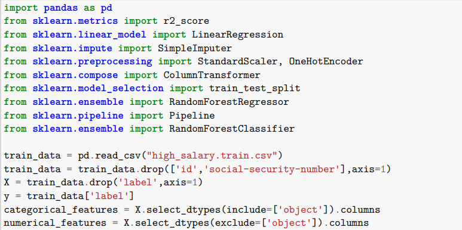 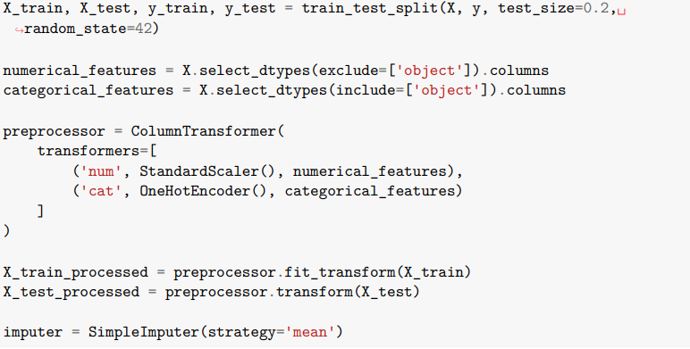 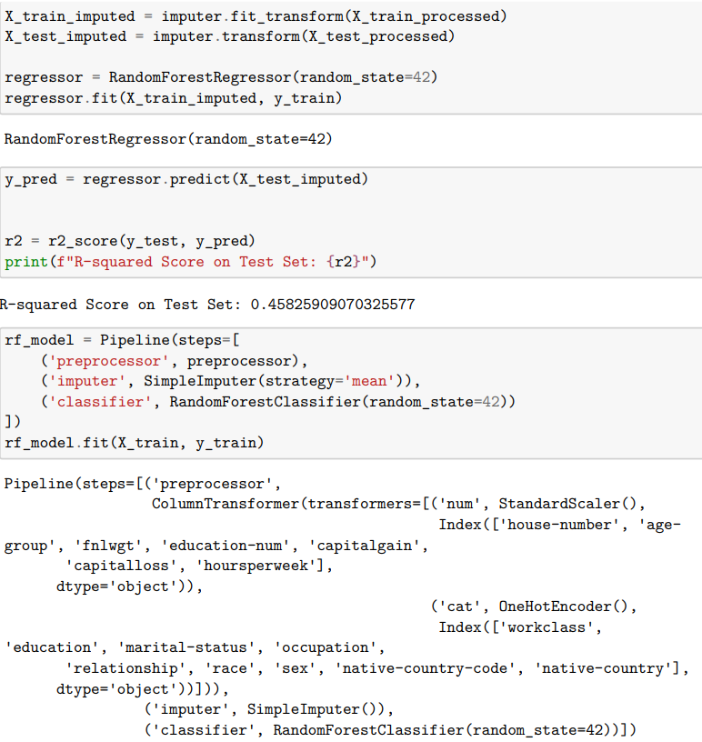 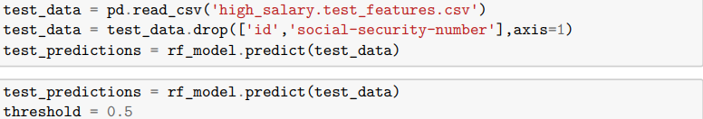 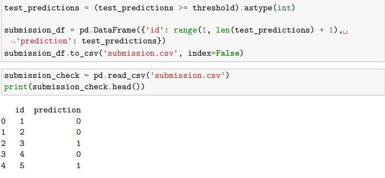The Submission File created has been loaded to check the information in the file. Therefore, the model created in this case is RandomForestClassifier The data is processed and then used together with Pipeline in the modeling process.
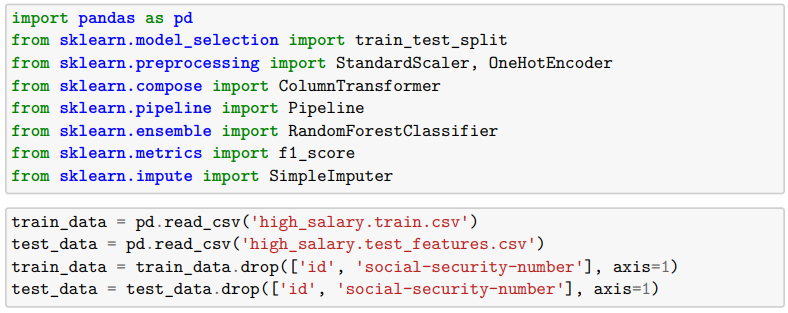 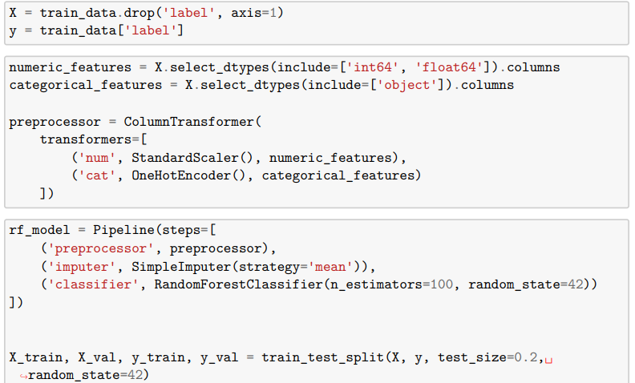 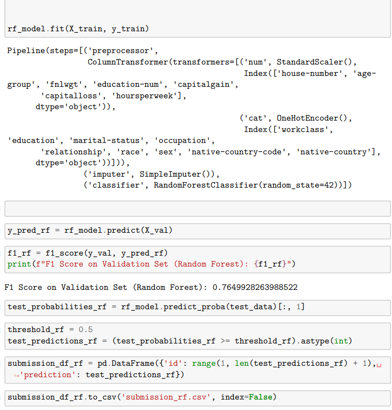 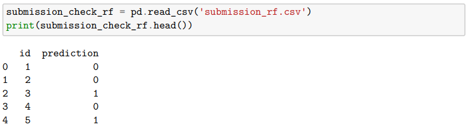the model created in this case is a Logistic Regression Classifier, with the data processed thereafter and used with Pipeline in the modeling process
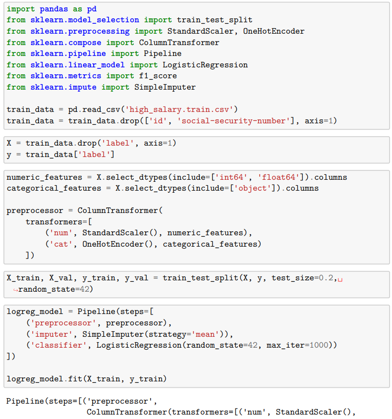 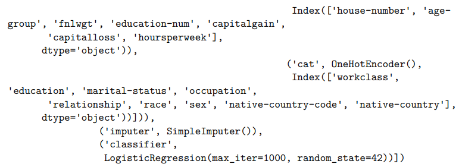 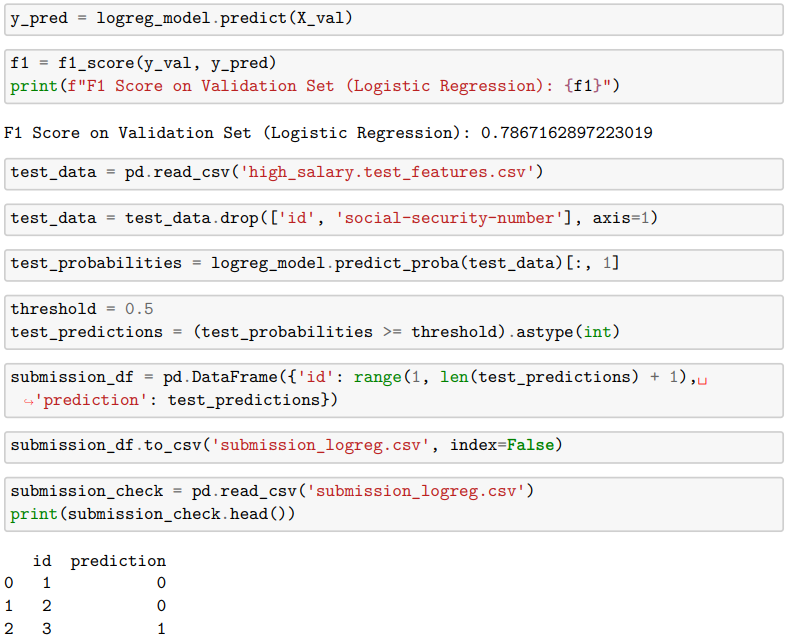